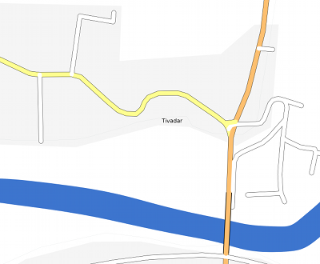
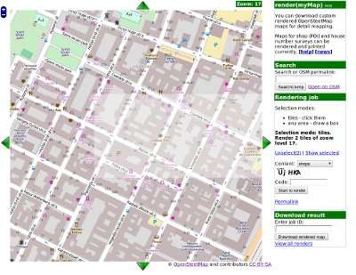

2022.04.21.
- Improve rendering of crossing: not a zebra icon for unmarked
- Render kerb=* in wheelchair mode
- Render all
advertising=*,
natural=*,
power=*,
military=*
nodes, ways and areas and label them with their type (if no name)
- Improve no-name labels: remove labels from some obvious icons (parking, bench, etc), and add sport name to pitch
- Add icon for trees and green line for tree_rows
2022.04.10.
- Improve rendering in "bare" mode:
- Render ways as a single line, with readable label over them
- Allow bigger area (more objects actually) to be printed
- Will not download or count unnecessary objects (buldings, shops, etc)
- Create a funny in-progress animgif
- Updated OSM link handling to current format
- Updated permalink handling to include paper and style settings
- Increase font size of POIs and housenumbers (as increased ways earlier)
2022.03.24.
- Improve rendering of living_streets
- Remove the old "download result" form - not necessary
2021.07.14.
- Implemented rendering filled multipoligons
2020.08.21.
- Improve rendering of lamp, church, fence, wastebasket
2019.09.24.
- Changed LIMIT to 2000 nodes (from 5000 objects), hopefully a more friendly limitation, because the objects query catched a lot of extra things via parent-elements.
- Imroved readabilty (bigger fonts, better OSM-like colors, etc)
- Show POI icons on area POIs too, not only nodes
- Mark oneway roads with dots (in lack of better possibility in CeyX)
- Render "ref" value
2018.12.20.
- Implemented a limit to allow maximum 5000 OSM objects per page (to counterfight "wrong use"). I think this puts unnecessary limit on a legitimate uses, but I cannot find any other way to stop people from submitting completely useless renders of whole cities with all details on an A4 paper.
2018.10.01.
- Download data from OverPass API instead of api.openstreetmap.org
2018.03.21.
2018.03.18.
- Minor fixes to print misalignments
- Changed all osm.org URLs to HTTPS so they work again
- Separated stlyle for whleechair accessibility
2014.08.08.
- Render all highway=* nodes, ways and areas (so bus_stop name is shown, zebra crossing and so on)
- Render all public_transport=* nodes, ways and areas (stop_position is a small dot)
- Render wheelchair=*, overrides other icons, so it may need a new "style" option
- Show operator as label if object has no name.
2013.08.19.
- Render all emergency=* nodes, ways and areas (so far only fire hydrant has an icon)
2013.04.17.
- Render all railway=* nodes, ways and areas
- Added a "Detail" selection dropdown, instead autoselecting detail from current view's zoom
- Show more warnings for bad looking paper selection
2013.04.14.
- Render all historic=* nodes, ways and areas
- Render all barrier=* nodes as an "x"
- Include all images in render list thumbnails, not only first output tile
2013.04.10.
- GUI rewritten in OpenLayers
- Searchable list of previous renders (instead simple dir index)
- Support for adding a note to render, so it can be searched later
- Paper size selection (it's a CSS "width" rule, report if not good for your printer)
- Show area width/height on print
- Dropped "OSM tile based selection"
- Selection does not work well on IE (but also on original OL example, sorry!)
2013.04.06.
- Better CAPTCHA, that does not require SVG.
2012.04.17.
- 300 DPI PNGs are back, because 600 DPI didn't increase printing quality as expected
- Most icons are black now, for better visiblity
- Bigger icons
- Print date
- Render healthcare POIs
- Show "operator" for ATM and Fuel without name
2012.03.28.
- Output PNGs are 600 DPI instead 300
- Add search function
- Allow 11 square km in box selection instead 2x2 km
- Better way styles (darker casing, show path)
- Render man_made=*
- Better header on screen output: date, link to selection, job id
- Footer with (1) (2) (..) mapper hint
- Show POIs icons from z14 (labels are still only from z15)
- Show render progress bar
- Instant start of rendering
- Show landuse area again (may need a checkbox)
- Won't render "wetland" (overflows due to huge multipoly missing parts)
2011.11.21.
- Remember box selection even if moved outside
- Add more text info to prints
- Generate HTML for one-page box selection too
- Support 1x3 and 3x1 page format

2011.11.08.
- Show ways in parks
- Render "leisure", trees
- More highways display street name.
- Generate HTML in one tile mode too (helps printing)
- Hide commercial and some other areas
- Add "Open on OSM" link
2011.10.05.
- Print tile info and link
- No housenumber on POIs in POI mode
- Keep box selection on zoom and move
See also
Contact
Ferenc Veres info@osmtippek.hu
{kind=link}